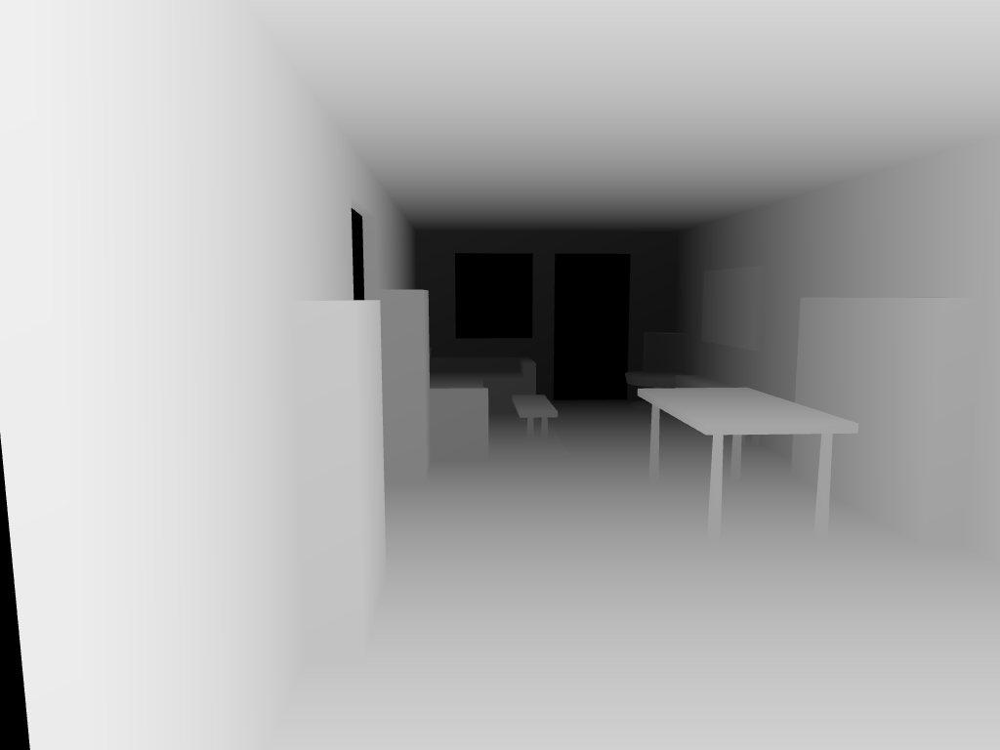

Depth-conditioned rendering spike
Input depth map

Runs (newest first)
20260717-112228 | model=flux | endpoint=fal-ai/flux-control-lora-depth | scale=1.0 | size=1024x768 | n=5 | seed=None | est. cost=$0.2000
A photo of a real lived-in living room in a modern apartment, view from the entryway looking across the room toward the windows. Light grey fabric L-shaped sofa with chaise longue (Lejde light grey) against the far wall, below a framed window and a full-height glass balcony door with charcoal grey aluminum frames letting in natural daylight. In front of the sofa a long low narrow solid oak coffee table on a large blue high-pile area rug. Next to the sofa a natural pine open bookcase with eight cubbies and dark back panels, tightly packed with colorful books. In the far corner by the TV wall a round swivel armchair in charcoal black-and-white flecked melange fabric. On the right wall a Samsung Frame TV with thin white bezel mounted flush on the wall above a mid-century TV stand with oak top, white drawer fronts and tapered wooden legs, flanked by two tall black tower speakers. A dining table with a white lacquer top and pecan wood tapered legs on the right, with chairs. A slim white shoe cabinet against the near wall. A small three-arm chandelier with white glass shades on the ceiling. Warm white walls, large light greige porcelain floor tiles with matching skirting, soft afternoon light. Realistic interior photography, natural colors, no people.
20260717-112149 | model=flux | endpoint=fal-ai/flux-control-lora-depth | scale=1.0 | size=1024x768 | n=5 | seed=None | est. cost=$0.2000
A photo of a real lived-in living room in a modern apartment, view from the sofa toward the TV wall. Samsung Frame TV with a thin white bezel mounted completely flush against the warm white wall. Directly below it a mid-century TV stand with a warm oak wood top and frame, flat white drawer fronts, an open middle shelf holding a DVD player and a game console, on tapered round wooden legs; a woven seagrass basket and a small dark stone on a grey tray sit on top. Two tall slim black tower speakers flank the TV stand, with a black subwoofer to the right. In the left corner a round swivel armchair in charcoal black-and-white flecked melange fabric. To the right of the TV a white IKEA cabinet with woven bamboo doors on white rolling drawers, about 1.5m tall. Further right a black and stainless steel bottom-load water dispenser near the open kitchen. A dining table with a white lacquer top and pecan wood tapered legs, with chairs. Large light greige porcelain floor tiles with matching skirting. Natural daylight from a glass balcony door and window with charcoal grey aluminum frames on the left, soft afternoon light. Realistic interior photography, natural colors, no people.
20260717-015819 | model=flux | endpoint=fal-ai/flux-control-lora-depth | scale=1.0 | size=1024x768 | n=5 | seed=None | est. cost=$0.2000
A photo of a real lived-in living room, view from the entryway looking across the room toward the windows. Light grey fabric L-shaped sofa with chaise longue (Lejde light grey) against the far wall below two windows. Round grey swivel armchair next to the sofa. Light wood dining table on the right. Low dark wood TV stand. Tall shelving by the far wall. Warm white walls, light floor tiles, natural daylight from the windows, soft afternoon light. Realistic interior photography, natural colors, no people.
20260717-015648 | model=flux | endpoint=fal-ai/flux-control-lora-depth | scale=1.0 | size=1024x768 | n=5 | seed=None | est. cost=$0.2000
A photo of a real lived-in living room, view from the sofa toward the TV wall. Light grey fabric L-shaped sofa with chaise (Lejde light grey). Wall-mounted Samsung Frame TV, and directly below it a low dark wooden TV stand media console. Tall bookshelf in the corner, white Billy shelving unit against the wall. Light wood dining table with chairs. Round grey swivel chair. Warm white walls, light floor tiles, natural daylight from windows on the left, soft afternoon light. Realistic interior photography, natural colors, no people.
20260717-015432 | model=flux | endpoint=fal-ai/flux-control-lora-depth | scale=1.0 | size=1024x768 | n=1 | seed=None | est. cost=$0.0400
A photo of a real lived-in living room, view from the sofa toward the TV wall. Light grey fabric L-shaped sofa with chaise (Lejde light grey). Wall-mounted Samsung Frame TV above a TV stand. Tall bookshelf in the corner, white Billy shelving unit against the wall. Light wood dining table with chairs. Round grey swivel chair. Warm white walls, light floor tiles, natural daylight from windows on the left, soft afternoon light. Realistic interior photography, natural colors, no people.